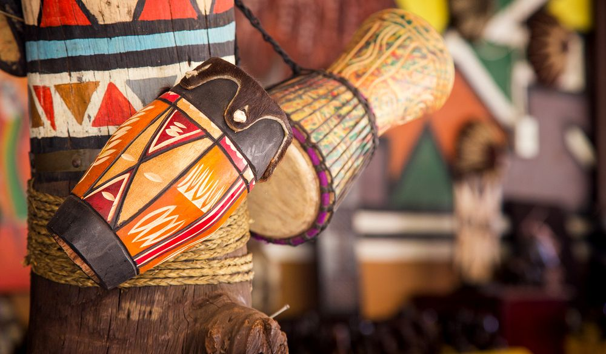

South Africa, the southernmost country on the African continent, renowned for its varied topography, great natural beauty, and cultural diversity, all of which have made the country a favoured destination for travelers since the legal ending of apartheid (Afrikaans: “apartness,” or racial separation) in 1994.
South Africa’s remoteness—it lies thousands of miles distant from major African cities such as Lagos and Cairo and more than 6,000 miles (10,000 km) away from most of Europe, North America, and eastern Asia, where its major trading partners are located—helped reinforce the official system of apartheid for a large part of the 20th century. With that system, the government, controlled by the minority white population, enforced segregation between government-defined races in housing, education, and virtually all spheres of life, creating in effect three nations: one of whites (consisting of peoples primarily of British and Dutch [Boer] ancestry, who struggled for generations to gain political supremacy, a struggle that reached its violent apex with the South African War of 1899–1902); one of blacks (consisting of such peoples as the San hunter-gatherers of the northwestern desert, the Zulu herders of the eastern plateaus, and the Khoekhoe farmers of the southern Cape regions); and one of “Coloureds” (mixed-race people) and ethnic Asians (Indians, Malays, Filipinos, and Chinese). The apartheid regime was disdained and even vehemently opposed by much of the world community, and by the mid-1980s South Africa found itself among the world’s pariah states, the subject of economic and cultural boycotts that affected almost every aspect of life. During this era the South African poet Mongane Wally Serote remarked,